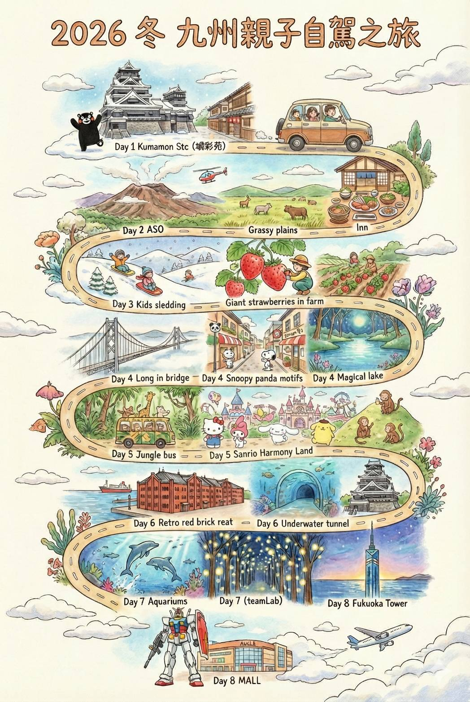
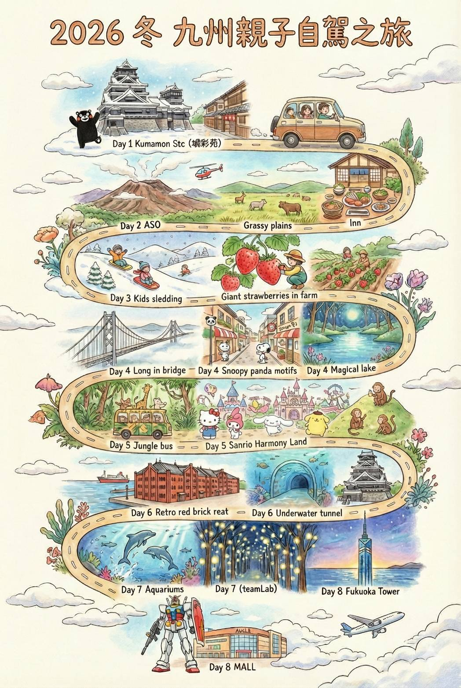

🇹🇼🇯🇵 2026 冬 九州親子自駕8日 Ver. 49 (更新：2025/12/03)
 

🗓️ 行程資訊
👨👩👧👦
2位大人、2位小孩（9歲 & 3歲）
✈️ 星宇航空 Starlux (去程)
JX846
20
JAN
2026
TPE
✈️To
KMJ
Depart
07:30
Arrive
10:35
✈️ 星宇航空 Starlux (回程)
JX841
27
JAN
2026
FUK
✈️To
TPE
Depart
19:10
Arrive
20:50


🚨 行前最重要！關鍵檢查表
- 🚗 租車關鍵：務必確認已指定【雪胎 (Snow Tires)】。車型推薦 Sienta。
- 📍 機場取還：確認「熊本機場取車、福岡機場還車」。
- 🎫 提前預約：Day 7 teamLab、Day 5 動物園叢林巴士。
- 🧥 冬季穿著：戶外重點區必備防風保暖裝備。
- 📦 打包提醒：布丁、果醬類屬液體，回程請務必放託運。
🌦️ 旅途天氣預報 (1月歷史均溫)
※ 此為歷史數據參考，山區(阿蘇/由布院)體感約 -5°C，請務必洋蔥式穿搭。
※ 點擊地點名稱可查看詳細天氣預報 (Yahoo JP)
| 日期 | 地點 | 天氣/氣溫 (參考) |
|---|---|---|
| 1/20 (二) | 熊本市 | ☁️ 多雲 (2°C ~ 11°C) |
| 1/21 (三) | 阿蘇山 | ❄️ 降雪機率高 (-4°C ~ 4°C) |
| 1/22 (四) | 阿蘇/九重 | ❄️ 滑雪場 (-6°C ~ 1°C) |
| 1/23 (五) | 由布院 | 🌫️ 晨霧/寒冷 (-1°C ~ 7°C) |
| 1/24 (六) | 別府 | ⛅ 晴時多雲 (3°C ~ 9°C) |
| 1/25 (日) | 門司/小倉 | 🌬️ 海風強勁 (4°C ~ 10°C) |
| 1/26 (一) | 福岡市 | ☁️ 多雲 (3°C ~ 11°C) |
| 1/27 (二) | 福岡機場 | ⛅ 晴朗 (3°C ~ 11°C) |
🗺️ Day 1 (1/20 二)
抵達熊本、UNIQLO採購
- 10:35 抵達熊本 ➔ 11:30 機場取車。
- 中午：熊本市區午餐 (勝烈亭豬排)。
- 🍢 必吃小吃：いきなり団子 (紅豆地瓜)、辛子蓮藕。
- 下午：
- UNIQLO 新市街店：補齊上山裝備。
- 熊本熊部長辦公室：提早卡位。
- 城彩苑：傍晚逛街吃點心。
- 晚餐：馬肉料理或熊本拉麵。
- 🏠 住宿：熊本城飯店
- 🎁 必買特產：熊本熊周邊 (辦公室/城彩苑)、譽之陣太鼓 (金色包裝求肥甜點)、芥末蓮藕脆片 (下酒菜)。
- ☔ 雨雪備案：下通商店街 (全區有屋頂)、SAKURA MACHI 購物中心 (室內)。
🗺️ Day 2 (1/21 三)
早安熊本城 ➔ 阿蘇震撼
- 09:00 準時「進去」參觀熊本城。
- 中午：開車往阿蘇 (1.5hr)。必停「道の駅 大津」。
- 🍢 必吃小吃：阿蘇澤西牛乳霜淇淋 (草千里)、高菜飯。
- 下午 (阿蘇)：
- 直升機體驗：推薦「卡德利動物樂園」。
- 草千里 & 火山口：視天氣走訪。
- 傍晚：飯店 Check-in 溫泉晚餐。
- 🏠 住宿：阿蘇 湯巡追莊 (霜降牛吃到飽!)
- ☔ 雨雪備案：阿蘇火山博物館 (草千里旁室內)、阿蘇農場 Aso Farm Land (室內巨蛋)。
🗺️ Day 3 (1/22 四)
阿蘇歡樂玩雪日
- 全日目標：**九重森林公園滑雪場**。專攻「兒童雪盆區」。
- 🍢 必吃小吃：滑雪場食堂的熱咖哩飯、暖呼呼玉米濃湯。
- 🏠 住宿：阿蘇 湯巡追莊 (續住)
- 🎁 必買特產：阿部牧場 ASOMILK (三星獎鮮奶)、阿蘇牛奶年輪蛋糕 (常溫好帶)。
- ☔ 暴風雪備案：改去「阿蘇農場 (元気の森)」室內運動區，或飯店溫泉耍廢。
🗺️ Day 4 (1/23 五)
絕景公路移動日 (阿蘇➔由布院)
- 10:00 退房，行駛 **山並公路**。中途停「瀨之本高原」。
- 中途停留：**九重夢大吊橋**。
- 午餐：吊橋遊客中心漢堡。
- 下午：抵達由布院 ➔ **湯之坪** ➔ **金鱗湖**。
- 🍢 必吃小吃：金賞可樂餅、Milch 布丁、B-Speak 蛋糕捲。
- 🏠 住宿：由布院 UBL 飯店 (懷石料理)
- 🎁 必買特產：柚子胡椒 (湯之坪醬料店)、Milch 烤甜甜圈 (常溫)、GOEMON 蛋糕卷。
- ☔ 雨雪備案：由布院彩繪玻璃美術館、Comico Art Museum (隈研吾建築)、岩下收藏館。
🗺️ Day 5 (1/24 六)
別府親子雙重奏
- 09:00 出發：**九州自然動物園**。搶搭「叢林巴士」。
- 下午：**三麗鷗和諧樂園**。
- 🍢 必吃小吃：地獄蒸布丁 (別府)、大分炸雞天婦羅 (Toriten)。
- 🏠 住宿：由布院 UBL 飯店 (續住)
- ☔ 雨雪備案：大分海洋宮殿水族館「海之卵」(室內為主)、別府竹細工傳統產業會館。
🗺️ Day 6 (1/25 日)
跨越北九州 (避開塞車)
- 上午：07:30 金鱗湖晨霧。10:00 退房往北九州。
- 中午 (小倉)：參觀 **小倉城**。
- 下午 (門司)：**關門海峽人行隧道**。
- 🍢 必吃小吃：門司港燒咖哩 (Yaki Curry)、鐵鍋餃子。
- 晚餐：**AEON MALL 福津** (避開福岡市區塞車)。
- 🏠 住宿：福岡貝塚 Vessel Hotel
- 🎁 必買特產：螺絲巧克力 (小倉城/門司港)、香蕉夾心餅乾、燒咖哩調理包。
- ☔ 雨雪備案：九州鐵道紀念館 (門司港/室內)、北九州市立自然史博物館 (生命之旅/恐龍)。
🗺️ Day 7 (1/26 一)
海陸空制霸 + 百道濱
- 上午：**海中之道海洋世界** (海豚秀)。
- 🍢 必吃小吃：明太子法國麵包 (Full Full)、博多豚骨拉麵。
- 下午：**teamLab Forest Fukuoka**。
- 傍晚：**百道海濱公園** ➔ **福岡塔** 夜景。
- 🏠 住宿：福岡貝塚 Vessel Hotel (續住)
- 🎁 必買特產：一蘭/一風堂拉麵禮盒 (超市買便宜)、福岡甜王草莓 (Amaou) 限定零食。
- ☔ 雨雪備案：福岡市科學館 (六本松/室內互動多)、Mark Is 福岡 (百道濱大型商場)。
🗺️ Day 8 (1/27 二)
鋼彈 ➔ 機場大採購
- 上午：10:30 退房前往 **LaLaport**。
- 午餐/逛街：看 1:1 Nu 鋼彈、補貨。
- 14:30：前往機場，避開車潮。
- 🍢 必買伴手禮：努努雞 (冷炸雞)、博多通利蒙、Menbei 仙貝。
- 15:00：機場還車 ➔ 免稅店採購。
- 19:10：搭機返台。
- 🎁 機場必掃：福太郎 Menbei (明太子仙貝)、博多通饅頭 (奶香白豆沙)、管狀明太子 (Tubu Tube)。
- ⚠️ 重要提醒：布丁/果醬屬液體，請在機場報到前放入託運！明太子機場買可附保冷劑。
- ☔ 雨雪備案：LaLaport 為全室內商場，無須擔心天氣。
🏨 住宿訂房明細
Day 1: 熊本城飯店 (Kumamoto Hotel Castle)
- 入住: 1/20 (15:00) | 退房: 1/21 (12:00)
- 房型: 特別和洋室 70m² | 費用: JPY 41,200 (現場付)
Day 2-3: 阿蘇 湯巡追莊 (Yumeoiso) [2晚]
- 入住: 1/21 (15:00) | 退房: 1/23 (10:00)
- 房型: 半露天風呂付 3床房 | 餐食: 一泊二食 Buffet
- 費用: JPY 127,600 (現場付)
🏨 住宿訂房明細 (續)
Day 4-5: 由布院 UBL 飯店 [2晚]
- 入住: 1/23 (15:00) | 退房: 1/25 (10:00)
- 房型: 標準日式客房 | 餐食: 一泊二食 懷石
- 費用: JPY 89,207 (已扣款) + 入湯稅 (現場付)
Day 6-7: 福岡貝塚 Vessel Hotel [2晚]
- 入住: 1/25 (12:00後) | 退房: 1/27 (11:00)
- 房型: 寬敞雙床房 (併床) | 餐食: 含早餐
- 費用: JPY 35,412 (現場付)
💰 住宿費用統計表
| 地點 | 飯店 | 付款方式 | 金額 (日圓) |
|---|---|---|---|
| 熊本 | 熊本城飯店 | 現場支付 | ¥41,200 |
| 阿蘇 | 湯巡追莊 | 現場支付 | ¥127,600 |
| 由布院 | UBL 飯店 | 已線上扣款 | ¥89,207 |
| (UBL 入湯稅) | 現場支付 | ¥1,200 | |
| 福岡 | Vessel 貝塚 | 現場支付 | ¥35,412 |
| 總計 (7晚) | ¥294,619 | ||
⏰ 每日建議出發時間
- Day 1：11:30 機場取車
- Day 2：08:40 走路去熊本城
- Day 3：09:30 出發去滑雪
- Day 4：10:00 準時退房
- Day 5：09:00 準時出發
- Day 6：10:00 準時退房
- Day 7：09:15 出發水族館
- Day 8：10:30 退房去 LaLaport
☕ 每日拿鐵補給站
- Day 1 熊本：Gluck Coffee Spot
- Day 2 阿蘇：Kusasenri Coffee (草千里)
- Day 3 阿蘇：道之驛阿蘇
- Day 4 由布院：Cafe La Ruche
- Day 5 別府：Carandonel
- Day 6 小倉：Parts Of Life
- Day 7 福岡：RHC CAFE
- Day 8 LaLaport：倉式珈琲店
🚗 廁所 & 開車指南
- Day 2 (往阿蘇)：必停「道の駅 大津」。
- Day 4 (往由布院)：必停「瀨之本高原」或「長者原」。
- Day 6 (往北九州)：必停「別府灣 SA」。
- Day 6 (往福岡)：必停「AEON MALL 福津」。
- 車型：Sienta，下坡用 B 檔。
📘 區域深度攻略 (按日期排序)
1. 🏯 熊本城 & 城彩苑 (Day 1/2)
✨ 親子亮點：
熊本城旁有一個「湧湧座」歷史文化體驗館，小孩可以體驗穿忍者服。🍦 城彩苑必吃：
海膽可樂餅、熊本熊人形燒。💡 小撇步：
天守閣裡面有現代化冷暖氣與電梯。🎟️ 省錢攻略：
購買「熊本城 + 湧湧座」共通入場券 (約850円)，比分開買便宜。
2. 🌋 阿蘇火山 & 草千里 (Day 2/3)
🚁 必玩體驗 (直升機)：
強烈推薦去「卡德利動物樂園」搭乘。☕ 草千里之冬：
冬天是一片銀白世界。必去「Kusasenri Coffee Roastery」。🥩 必吃美食 (赤牛丼)：
推薦「Imakin食堂」。☔ 壞天氣備案：
「阿蘇農場 (Aso Farm Land)」。🎟️ 省錢攻略：
「卡德利動物樂園」官網常有折價券 (需出示手機畫面)，約可省 100~200円。
3. 🧸 由布院親子散策 (Day 4/5)
✨ 必訪體驗：
Floral Village (童話村)、金鱗湖晨霧。🛍️ 卡通名店：
橡子之森、SNOOPY 茶屋。🍰 必吃美食：
金賞可樂餅、Milch 半熟起司蛋糕、B-Speak 生乳捲。🎟️ 省錢攻略：
「九州自然動物園」門票建議提前在 Klook/KKday 購買，通常比現場便宜且省排隊時間。
4. 🏰 北九州：小倉城 & 門司港 (Day 6)
✨ 親子亮點 (小倉城)：
小倉城內部已經改裝成互動樂園！🌉 必看 (門司港)：
「藍翼門司吊橋」開橋秀。🚶♂️ 體驗：
走「關門海峽海底隧道」一腳跨兩縣。🎟️ 省錢攻略：
若要參觀多個館，可購買「門司港懷舊周遊券 (Clover Ticket)」。
5. 🗼 福岡百道濱區 (Day 7)
📲 teamLab Forest 攻略：
下載 APP 抓動物。🌇 福岡塔：
黃昏轉夜景的時間最美。🎟️ 省錢攻略：
外國遊客出示護照，福岡塔門票享 20% 折扣優惠。
6. 🛍️ LaLaport 鋼彈 & 購物 (Day 8)
🤖 鋼彈表演：
1:1 Nu鋼彈立像表演。🎮 4F 孩子天堂：
Namco 遊戲中心和各種轉蛋機。🎟️ 優惠券攻略：
- 百貨公司 (博多阪急/岩田屋)：至服務台領取 5% Guest Card。
- 藥妝店/Bic Camera：結帳前 Google 搜尋「Bic Camera coupon」，出示條碼享免稅10%+折扣3~7%。
7. 🎟️ 購物與優惠券 (含藥妝/電器)
8. 🎣 九州親子釣魚指南
🛒 推薦釣具店 (補給站)：
Fishing Point (釣具のポイント)：九州最大連鎖。
※ 推薦「八幡本店」(北九州) 或「福岡花畑本店」。可免稅。📍 推薦釣點 (親子友善)：
1. 福岡市海づり公園：有護欄、販賣部、租借服務。
2. 門司港懷舊區：岸壁安全，目標魚竹莢魚。⚠️ 注意事項：
兒童務必穿著救生衣。垃圾請自行帶走。推薦使用「薩比基 (Sabiki)」釣組。
🛰️ 導航資訊
※ 點擊「MapCode」可開啟 Google Maps 導航。
※ 若景點與停車場不同位置，已分別列出。
📍 熊本區域 (Kumamoto)
| 地點 / 🅿️ 停車資訊 | MapCode (🚗 導航設定) | 電話 |
|---|---|---|
| ✈️ 熊本機場 (取車) 🅿️ 租車公司專用停車場 |
415 440 317*41 | 096-232-2311 |
| 🏨 熊本城飯店 🅿️ 飯店附設停車場 |
29 459 485*82 | 096-326-3311 |
| 🏯 熊本城 & 城彩苑 🅿️ 城彩苑停車場 (最近) |
29 489 267*58 (即停車場入口) |
096-288-5600 |
| ☔ SAKURA MACHI (室內商場) | 29 459 644*63 | 096-354-1111 |
🛰️ 導航：阿蘇區域
📍 阿蘇區域 (Aso)
| 地點 / 🅿️ 停車資訊 | MapCode (🚗 導航設定) | 電話 |
|---|---|---|
| ♨️ 阿蘇 湯巡追莊 🅿️ 飯店專用停車場 |
256 657 512*82 | 0967-32-0622 |
| kumamon 卡德利動物樂園 🅿️ 園區正門停車場 |
256 423 487*30 | 0967-34-2020 |
| 🌋 阿蘇火山 (草千里) 🅿️ 草千里收費停車場 |
256 456 835*36 | 0967-34-2111 |
| ⛷️ 九重森林滑雪場 🅿️ 滑雪場專用停車場 |
440 629 036*55 | 0973-79-2200 |
| ☔ 阿蘇火山博物館 (室內) | 256 456 770*85 | 0967-34-2111 |
| ☔ 阿蘇農場 (元気の森) | 256 512 856*85 | 0967-67-2100 |
🛰️ 導航：由布院區域
📍 由布院/九重區域 (Yufuin)
| 地點 / 🅿️ 停車資訊 | MapCode (🚗 導航設定) | 電話 |
|---|---|---|
| 🌉 九重夢大吊橋 🅿️ 中村口停車場 (較大) |
269 012 125*14 | 0973-73-3800 |
| 🏨 由布院 UBL 飯店 🅿️ 飯店專用停車場 |
269 359 521*55 | 0977-84-3111 |
| ☔ 由布院彩繪玻璃美術館 | 269 328 355*55 | 0977-84-5575 |
| ☔ Comico Art Museum | Google Map | 0977-28-8830 |
🛰️ 導航：別府區域
📍 別府區域 (Beppu)
| 地點 / 🅿️ 停車資訊 | MapCode (🚗 導航設定) | 電話 |
|---|---|---|
| 🦁 九州自然動物園 🅿️ 入口處大型停車場 |
46 635 545*60 | 0978-48-2331 |
| 🎀 和諧樂園 (Kitty) 🅿️ 樂園正門停車場 |
46 833 460*58 | 0977-73-1111 |
| 🐬 海之卵水族館 🅿️ 共有停車場 |
46 405 660*71 | 097-534-1010 |
| ☔ 別府竹細工傳統產業會館 | 46 437 816*30 | 0977-23-1072 |
🛰️ 導航：北九州區域
📍 北九州區域 (Kitakyushu)
| 地點 / 🅿️ 停車資訊 | MapCode (🚗 導航設定) | 電話 |
|---|---|---|
| 🏯 小倉城 🅿️ 勝山公園地下停車場 |
🏯 16 465 525*33 🅿️ 16 465 484*44 |
093-561-1210 |
| ⚓ 門司港懷舊區 🅿️ 門司港懷舊停車場 |
3 634 322*11 (即停車場入口) |
093-321-4151 |
| 🎣 釣具のポイント 八幡本店 ※ 北九州最大級釣具店 |
16 341 782*25 | 093-661-3111 |
| ☔ 九州鐵道紀念館 | 3 714 075*25 | 093-322-1006 |
| ☔ 生命之旅博物館 (恐龍) | 16 343 325*17 | 093-681-1011 |
🛰️ 導航：福岡區域
📍 福岡區域 (Fukuoka)
| 地點 / 🅿️ 停車資訊 | MapCode (🚗 導航設定) | 電話 |
|---|---|---|
| 🛍️ AEON MALL 福津 🅿️ 商場免費停車場 |
13 738 238*85 | 0940-38-5600 |
| 🏨 福岡 Vessel 貝塚 🅿️ 飯店平面停車場 |
13 469 663*55 | 092-642-0101 |
| 🐬 海中之道水族館 🅿️ 海洋世界停車場 |
13 522 795*55 | 092-603-0400 |
| 💡 teamLab (BOSS EZO) 🅿️ PayPay巨蛋停車場 |
💡 13 345 547*55 🅿️ 13 345 373*52 |
092-844-1189 |
| 🤖 LaLaport 福岡 🅿️ 商場停車場 (鋼彈旁) |
13 162 481*63 | 092-707-9820 |
| 🛍️ 博多運河城 (Canal City) ※ Alpen/愛電王/松本清 |
13 318 632*52 | 092-282-2525 |
| 📸 Bic Camera 天神二號館 🅿️ 需停周邊收費停車場 |
13 317 763*41 | 092-732-1112 |
| 🐧 唐吉訶德 箱崎店 🅿️ 免費停車場 (近Vessel飯店) |
13 469 353*22 | 0570-079-711 |
| 🎣 福岡市海づり公園 ※ 需入場費，有租借服務 |
13 431 354*11 | 092-809-2666 |
| 🎣 釣具のポイント 福岡花畑本店 ※ 市區大型釣具店 |
13 086 524*55 | 092-564-3371 |
| ☔ 福岡市科學館 (六本松) ※無停車場，請停周邊付費車位 |
13 255 798*52 | 092-731-2525 |
| ☔ Mark Is 福岡 (百道濱) | 13 344 863*52 | 092-407-1111 |